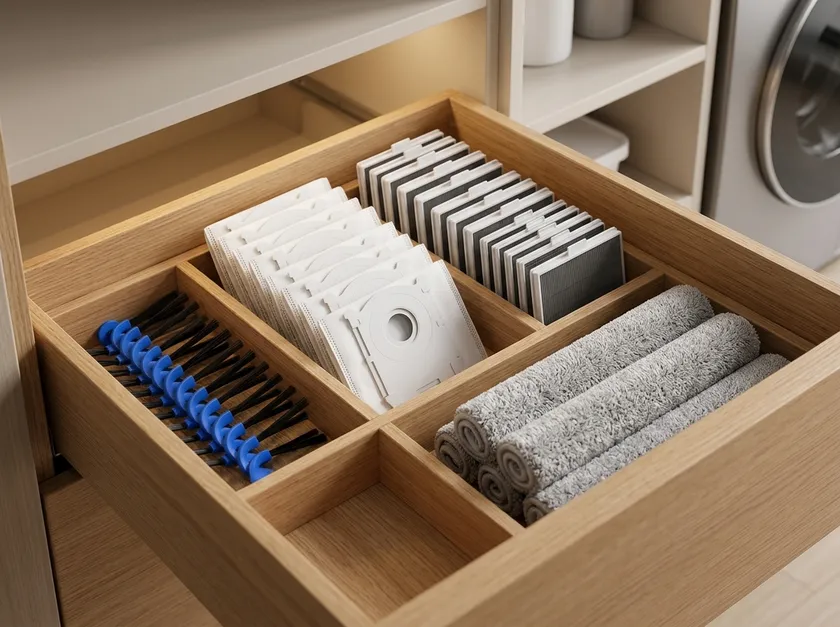

에코백스 (ECOVACS)
에코백스 T90 프로 옴니·T80 브러시·필터 관리｜3·6·12개월 세트 선택
글·구성: 제이상점 · 기종별 1:1 호환 실물 점검 · 교체 주기 비교표 · 스마트스토어 패키지 안내

핵심 관리 · 선택 체크포인트
- 에코백스 디봇 T90 프로 옴니와 T80 옴니는 오즈모 원통형 롤러에 깨끗한 물을 분사하며 오수를 실시간 긁어내는 구조라, 롤러 걸레뿐 아니라 제로탱글 V자 메인브러시 양끝 축 먼지·2암 사이드브러시 휨·블랙 프레임 워셔블 필터 건조 상태가 청소 체감 품질을 크게 좌우합니다.
- 오즈모 롤러·제로탱글 V자 브러시·블루 탭 더스트백 1:1 체결 디테일: T90 프로 옴니와 T80 옴니 하부는 화이트·블루 스트라이프 극세사 원통형 롤러 슬리브가 바닥을 밀착 세척하고, 전면 흡입부에서는 블루·블랙 V자 제로탱글 메인브러시와 모서리 먼지를 끌어 모으는 곡선형 2암 사이드브러시가 함께 맞물려 움직입니다.
- 아래 상품 메인 이미지를 직접 누르시거나 [제이상점 에코백스 T90 프로 옴니·T80 옴니 3개월·6개월·1년 소모품 세트 옵션 바로 확인하기]에서 전용 부품 실물 규격과 기간별 포함 수량을 확인해 보세요.
- 에코백스 T90 프로 옴니·T80 옴니 부위별 마모 신호·교체 기준표: 흡입력 유지와 바닥 물자국 예방을 위해 주기적으로 살펴봐야 할 T90 프로 옴니·T80 옴니 핵심 소모품별 점검 포인트입니다.
- 3개월·6개월·1년 세트(71,100원) 선택 기준과 베란다 24시간 교대 건조 요령: 제이상점 스마트스토어의 에코백스 T90 프로 옴니·T80 옴니 전용 상품은 3개월 세트·6개월 세트·1년 세트(71,100원) 세 가지 기간 옵션으로 운영됩니다.
실물 부품 디테일 · 관리 구성 이미지



부품 규격 · 점검 기준표
| 점검 품목 | T90 프로 옴니·T80 옴니 전용 규격 | 마모 신호 및 실전 교체 기준 |
|---|---|---|
| 제로탱글 V자 · 2암 브러시 | 블루·블랙 V자 메인브러시 + 곡선형 2암 사이드브러시 | 주 1회 양끝 회전축 실밥·먼지 제거, 고무 날개 갈라짐이나 2암 가닥 휨 시 교체 |
| 오즈모 원통형 롤러 걸레 | 화이트·블루 스트라이프 극세사 롤러 슬리브 | 파일 눕힘·세척 후 물자국 증가 시 분리 세척·수직 건조 후 마른 예비 롤러 교대 |
| 블랙 프레임 필터 · 더스트백 | 블랙 프레임 워셔블 필터 + 블루 탭 화이트 칼라 더스트백 | 필터 물세척 후 24시간 완전 건조 교대 장착, 더스트백 70~80% 시점 밀봉 교체 |
💡 교체 주기가 겹치는 필터·브러시·물걸레·더스트백은 단품 배송비를 여러 번 내기보다 에코백스 T90 프로 옴니 기간별 세트(3개월·6개월·1년)로 미리 구비해 두면 물세척 후 24시간 교대 건조까지 끊김 없이 관리할 수 있습니다.
자주 묻는 질문 (FAQ)
Q. 제로탱글 V자 메인브러시는 머리카락 엉킴 방지 구조인데도 양끝 축을 주기적으로 확인해야 하나요?
A. V자 빗살 구조가 긴 머리카락이 브러시 몸통에 감기는 현상을 줄여 주지만, 미세 실밥이나 반려동물 속털은 양끝 회전축 틈새에 조금씩 뭉칠 수 있습니다. 주 1회 브러시를 꺼내 양끝 축 이물을 털어 내고 2암 사이드브러시 가닥이 바깥으로 휘어 있지 않은지 함께 살피면 소파 하부와 벽면 모서리 흡입력을 오래 유지할 수 있습니다.
Q. 소모품 세트와 함께 에코백스 정품 디봇 클리너 1L를 준비할 때 1병과 2병 중 어느 옵션이 실속 있나요?
A. 바닥 청소 전용 DEEBOT 정품 클리너 1L(창문용 WINBOT 세정제와 별도 구분)는 거실·주방 물걸레 청소를 매일 돌리는 가정이라면 소모 속도가 일정하게 이어지므로 1L - 2병 (복수구매할인) 옵션으로 비축해 두면 해외직배송 대기 부담을 덜 수 있고, 사용량을 먼저 파악해 보고 싶다면 1L - 1병 옵션이 알맞습니다.
제이상점 1:1 검수 추천 패키지 · 구매 안내
메인 추천 구성
대표 구성 참고가 71,100원대 (옵션·쿠폰별 스마트스토어 결제 화면 기준)
1년 세트6개월 세트3개월 세트
![[정품] 에코백스 세제 세정제 소모품 T90 T80 X5 X8 X11](../../assets/img/ecovacs-cleaner-product-274f99ea.webp)
☑️ 주문 전 확인해 두면 좋은 제이상점 안심 포인트
· 기종별 1:1 전용 규격 검수: 모델명·연식에 맞는 호환·정품 구성을 검수해 오주문 불안을 줄였습니다.
· 해외직배송 미리 주문 팁: 중국 구매대행·해외직배송 상품이므로 마지막 여분 1개를 꺼내 쓰는 시점에 개인통관고유부호와 함께 여유 있게 주문해 두시면 훨씬 경제적인 비용으로 끊김 없이 교체하실 수 있습니다.
· 기종별 1:1 전용 규격 검수: 모델명·연식에 맞는 호환·정품 구성을 검수해 오주문 불안을 줄였습니다.
· 해외직배송 미리 주문 팁: 중국 구매대행·해외직배송 상품이므로 마지막 여분 1개를 꺼내 쓰는 시점에 개인통관고유부호와 함께 여유 있게 주문해 두시면 훨씬 경제적인 비용으로 끊김 없이 교체하실 수 있습니다.
📖 더 많은 가정 내 사용 스토리와 상세 후기가 궁금하시다면
📱 네이버 블로그 모바일 원문 보기 ↗